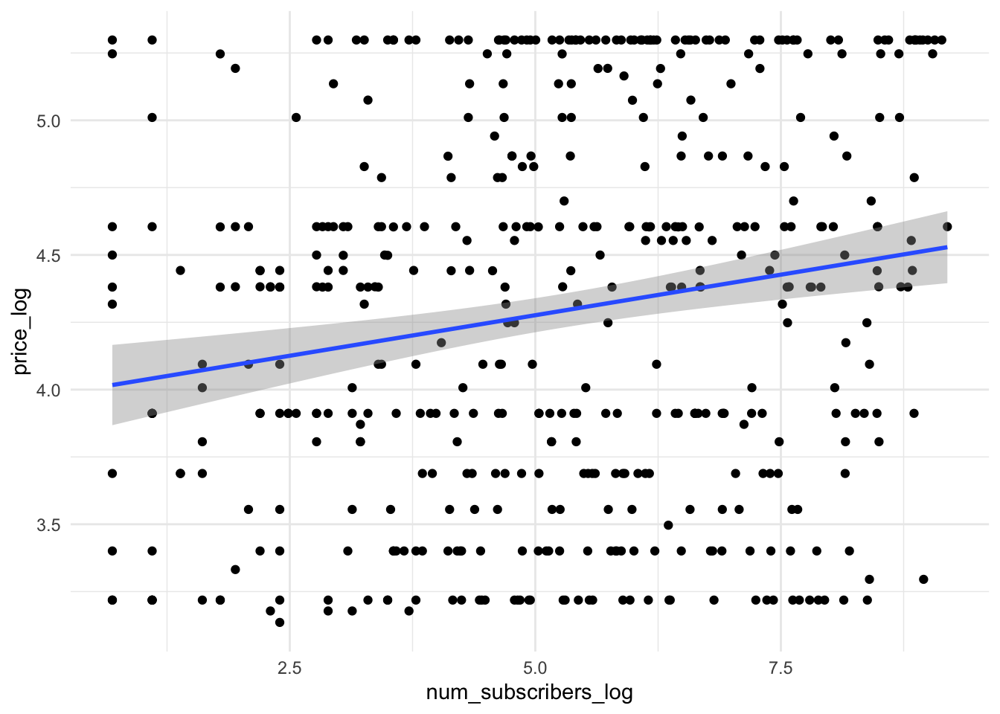

11 Проверка линейной свзяи
До этого мы рассматривали виды статистического анализа, когда нужно было сравнить средние значения в нескольких группах. Зависимая переменная всегда была количественная (ее среднее значение по группам мы и сравнивали), а независимая – категориальная, принимала конечное число значений, и каждое ее значение – отдельный уровень НП, отдельная группа.
Теперь мы переходим к статистическим критериям, которые используются, когда обе переменные, и ЗП, и НП – количественные.
11.1 Корреляционный анализ
Корреляция – это связь между переменными. Несмотря на то, что она называется так же, как и один из двух видов связи между переменными, корреляционную связь можно выявить с помощью в целом любых видов анализа – ведь когда мы получаем результаты статистических критериев, мы понимем только, что две переменные связаны (или нет), но не можем сделать вывод о том, причинно-следственная это связь или корреляционная.
Здесь речь пойдет именно про корреляционный анализ – специальный вид анализа для определения значимости линейной связи только между двумя количественными или порядковыми переменными.
Чтобы вывести формулу и смысл корреляции, познакомимся с понятием ковариации.
Ко-вариация (co-variance) – это мера со-изменчивости данных, показатель того, как наблюдения по двум количественным переменным меняются друг относительно друга.
 Картинка отсюда
Картинка отсюда
\(\text{cov}(x,y)=\frac{\sum_{i=1}^n (x_i - \bar x) (y_i - \bar y )}{n-1}\)
Шок-контент: попробуйте посчитать ковариацию переменной самой с собой и посмотрите на получившуюся формулу: ничего не напоминает?
Ковариация самой с собой
\(\text{cov}(x,x)=\frac{\sum_{i=1}^n (x_i - \bar x) (x_i - \bar x )}{n-1} = \frac{\sum_{i=1}^n (x_i - \bar x )^2}{n-1}\)
И это дисперсия!
Коэффициент корреляции – это показатель силы и направления связи между переменными. За силу связи отвечает модуль числа, за направление – знак корреляции. По сути, это ковариация переменных, но взвешенная на стандартные отклонения этих переменных. Это сделано для того, чтобы стандартизовать коэффициент, уйти от абсолютных значений к относительным и расположить этот коэффицент в границах [-1;1]. Для коэффициента корреляции Пирсона (корреляции двух количественных переменных):
\(\text{corr}(x,y) = r_{xy} = \frac{\text{cov(x, y)}}{sd_x sd_y} = \frac{\sum_{i=1}^n (x_i - \bar x) (y_i - \bar y )}{(n-1)sd_x sd_y}\)
Коэффициент детерминации – показатель, в какой степении изменчивость данных объясняется этой выбранной независимой переменной. В случае, если у нас только одна НП, то коэффициент детерминации – практически то же самое, что и корреляция, только взятая в квадрат:
\(R^2 = r_{xy}^2 = \frac{\text{cov(x, y)}}{sd_x sd_y} = \frac{\sum_{i=1}^n (x_i - \bar x) (y_i - \bar y )}{(n-1)sd_x sd_y}\)
Пример с сайта https://rpsychologist.com/correlation/
Игра по угадывание корреляции: http://guessthecorrelation.com/
11.1.1 Корреляционный тест
Гипотезы о наличии линейной связи между переменными проверяются при помощи корреляционного теста. Это точно такой же статистический критерий, как и те, что мы уже разобрали. По сути – ровно то же самое, что линейная регрессия с одной переменной. Корреляционный тест применяется, когда и ЗП, и НП являются количественными переменными либо выраженными в порядковкой шкале (но не номинативной). Для количественной шкалы обычно используется коэффициент корреляции Пирсона, для порядковой или для количественной переменной с малым числом наблюдений – коэффициент корреляции Спирмена.
Корреляционный тест использует – вы не поверите – уже знакомое нам T-распределение Стьюдента! (то есть, нам надо запомнить вообще всего два распределения: T-распределение и F-распределение)
Число степеней свободы вычисляется по формуле
\(df = n - 2\), n – число наблюдений
Нулевая и альтернативная гипотезы для корреляционного теста:
\(H_0\): \(r_{xy} = 0\)
\(H_1\): \(r_{xy} \neq 0\)
Как и остальные критерии, он имеет допущения.
11.1.2 Допущения для корреляционного теста
(ЗП и НП измерены в количественной или порядковой шкале)
- Распределение НП по ЗП линейно – нет картины нелинейной взаимосвязи или скоплений данных в разных местах.
- ЗП распределена нормально (не обязательно строгое соответствие) и нет заметных выбросов – обсуждали эту проверку здесь
Примеры, как может выглядеть нелинейное распределение:
 Картинка из википедии про корреляцию
Картинка из википедии про корреляцию
11.1.3 Непараметрические аналоги
Если ЗП сильно отличается от нормального распределения, или выборка мала, или ЗП закодирована в порядковой шкале – в корреляционном тесте используется коэффициент корреляции Спирмена вместо Пирсона, и это единственное различие.
Есть еще тау-Кендалла, это почти то же самое, что и корреляция Спирмена, но мы не будем ее рассматривать, так как она применяется крайне редко.

11.1.4 Расчет корреляционного теста
Проведем тест для следующей гипотезы.
Чем ниже студенты оценивают качество семейных отношений famrel, тем выше они отмечают частоту употребления алкоголя Walc
| student | school | sex | age | address | famsize | Pstatus | Medu | Fedu | Mjob | Fjob | reason | guardian | traveltime | studytime | failures | schoolsup | famsup | paid_mat | activities | nursery | higher | internet | romantic | famrel | freetime | goout | Dalc | Walc | health | absences_mat | G1_mat | G2_mat | G3_mat | paid_por | absences_por | G1_por | G2_por | G3_por | G_mat | G_por | absences_mat_groups | absences_por_groups |
|---|---|---|---|---|---|---|---|---|---|---|---|---|---|---|---|---|---|---|---|---|---|---|---|---|---|---|---|---|---|---|---|---|---|---|---|---|---|---|---|---|---|---|
| id1 | GP | F | 18 | U | GT3 | A | 4 | 4 | at_home | teacher | course | mother | 2 | 2 | 0 | yes | no | no | no | yes | yes | no | no | 4 | 3 | 4 | 1 | 1 | 3 | 6 | 5 | 6 | 6 | no | 4 | 0 | 11 | 11 | 5.666667 | 7.333333 | middle | less |
| id2 | GP | F | 17 | U | GT3 | T | 1 | 1 | at_home | other | course | father | 1 | 2 | 0 | no | yes | no | no | no | yes | yes | no | 5 | 3 | 3 | 1 | 1 | 3 | 4 | 5 | 5 | 6 | no | 2 | 9 | 11 | 11 | 5.333333 | 10.333333 | less | less |
| id4 | GP | F | 15 | U | GT3 | T | 4 | 2 | health | services | home | mother | 1 | 3 | 0 | no | yes | yes | yes | yes | yes | yes | yes | 3 | 2 | 2 | 1 | 1 | 5 | 2 | 15 | 14 | 15 | no | 0 | 14 | 14 | 14 | 14.666667 | 14.000000 | less | less |
| id5 | GP | F | 16 | U | GT3 | T | 3 | 3 | other | other | home | father | 1 | 2 | 0 | no | yes | yes | no | yes | yes | no | no | 4 | 3 | 2 | 1 | 2 | 5 | 4 | 6 | 10 | 10 | no | 0 | 11 | 13 | 13 | 8.666667 | 12.333333 | less | less |
| id6 | GP | M | 16 | U | LE3 | T | 4 | 3 | services | other | reputation | mother | 1 | 2 | 0 | no | yes | yes | yes | yes | yes | yes | no | 5 | 4 | 2 | 1 | 2 | 5 | 10 | 15 | 15 | 15 | no | 6 | 12 | 12 | 13 | 15.000000 | 12.333333 | middle | middle |
| id7 | GP | M | 16 | U | LE3 | T | 2 | 2 | other | other | home | mother | 1 | 2 | 0 | no | no | no | no | yes | yes | yes | no | 4 | 4 | 4 | 1 | 1 | 3 | 0 | 12 | 12 | 11 | no | 0 | 13 | 12 | 13 | 11.666667 | 12.666667 | less | less |
| id8 | GP | F | 17 | U | GT3 | A | 4 | 4 | other | teacher | home | mother | 2 | 2 | 0 | yes | yes | no | no | yes | yes | no | no | 4 | 1 | 4 | 1 | 1 | 1 | 6 | 6 | 5 | 6 | no | 2 | 10 | 13 | 13 | 5.666667 | 12.000000 | middle | less |
| id9 | GP | M | 15 | U | LE3 | A | 3 | 2 | services | other | home | mother | 1 | 2 | 0 | no | yes | yes | no | yes | yes | yes | no | 4 | 2 | 2 | 1 | 1 | 1 | 0 | 16 | 18 | 19 | no | 0 | 15 | 16 | 17 | 17.666667 | 16.000000 | less | less |
| id10 | GP | M | 15 | U | GT3 | T | 3 | 4 | other | other | home | mother | 1 | 2 | 0 | no | yes | yes | yes | yes | yes | yes | no | 5 | 5 | 1 | 1 | 1 | 5 | 0 | 14 | 15 | 15 | no | 0 | 12 | 12 | 13 | 14.666667 | 12.333333 | less | less |
| id11 | GP | F | 15 | U | GT3 | T | 4 | 4 | teacher | health | reputation | mother | 1 | 2 | 0 | no | yes | yes | no | yes | yes | yes | no | 3 | 3 | 3 | 1 | 2 | 2 | 0 | 10 | 8 | 9 | no | 2 | 14 | 14 | 14 | 9.000000 | 14.000000 | less | less |
Пойдем также по алгоритму.
ЗП – порядковая, НП – порядковая. Наша гипотеза не о сравнении групп между собой, а то, что эти переменные коррелируют, между ними есть линейная связь.
Так как ЗП и НП порядковые, мне нужно использовать непараметрический аналог корреляциии Пирсона – ранговую корреляцию Спирмена (либо порядковую логистическую регрессию (если я хочу, чтобы связь имела предсказательную силу), но об этом не в этот раз).
cor.test(students$famrel, students$Walc, method = 'spearman')##
## Spearman's rank correlation rho
##
## data: students$famrel and students$Walc
## S = 6173557, p-value = 0.0196
## alternative hypothesis: true rho is not equal to 0
## sample estimates:
## rho
## -0.130423Если бы у нас были две количественные переменные, то мы бы просто визуализировали их диаграммой рассеяния с уже привычной линией посреди точек. Например, такой:
 Картинка отсюда
Картинка отсюда
Но у нас две порядковые переменные, поэтому диаграмма рассеяния даст непонятный вариант. Поэтому будем использовать мозаичный плот: размер плитки отражает частоту совпадения таких значений двух переменных.

Другой вариант – хитмеп, тут размеры фиксированные, а за частоту совпадений отвечает цвет.

11.1.5 Интерпретация результатов
Когда мы интерпретируем результаты корреляционного теста, нас, как обычно, интересует значение статистики (t-значение или F-значение), p-value и размер эффекта. Для корреляционного теста значением статистики будет t-значение, но обычно фигурирует не оно, а коэффциент корреляции между переменными x и y \(r_xy\) – он же является и размер эффекта, показателем величины различий. Корреляционный тест – это единственный тест, где нам не нужна дополнительная метрика о размере эффекта (например Cohen’s d), а мы уже по самому коэффициенту судим о силе различий.
В примере выше мы получили r = -0.13. В коэффициенте корреляции мы смотрим на два параметра: это знак и модуль числа. Здесь у нас отрицательная корреляция, то есть связь будет обратной: с увеличением одной переменной (например, оценки качества семейных отношений famrel) будет уменьшаться вторая переменная (частота употребления алкоголя Walc). 0.13 по модулю – небольшое число, это довольно слабая корреляция (свериться с разбиением по размерам можно в разделе про размеры эффекта).
Важно, что при очень большой выборке даже совсем слабая корреляционная связь будет достигать статистической значимости! Поэтому не стоит увлекаться корреляционными тестами для поиска связей всего со всем: вы ее точно найдете, и она даже будет значимой. Как видите, даже r=0.1 может достигать порог статистической значимости.
Искать корреляцию стоит между осмысленными переменнами: так как при больших выборках она может быть значимой, может оказаться, что коррелируют между собой число фильмов, где снимался Николас Кейдж, и число самоубийств путем утопления – очевидно, что эти величины не связаны между собой, и корреляция тут случайна. Можно посмотреть на странные корреляции на сайте https://tylervigen.com/view_correlation?id=12692
Еще один важный момент – в корреляционном тесте, даже при идеально простроенном эксперименте, мы не сможем заключить причинно-следственную связь. Но важно не путь теоретическую возможность сделать вывод о причинно-следственной связи и методы статистического анализа: они как теплое и красное, относятся к разным вещам. За возможность сделать вывод говорит дизайн исследования, а не статистический тест. Если у нас хорошо проведенный контролируемый эксперимент, и соблюдаются 3 условия установления причинно-следственной связи (обсуждали это здесь), то мы можем ее заключить. При этом, применение того же ANOVA может относиться и не к эксперименту, и вывод мы все равно будем делать о корреляционной (ассоциативной) связи.

11.1.6 Корреляционные матрицы
Часто встречется анализ корреляционных матриц – когда корреляции вычисляются попарно для каждой матрицы переменных. Это можно встретить, например, при корреляции опросников: допустим, есть опросник О1 и О2. В опроснике О1 есть субшкалы С11, С12, С13, С14, С15, а в О2 соответственно – С21, С22, С23, С24, С25. Тогда мы можем построить корреляционную матрицу для субшкал этих опросников.

11.2 Линейный регрессионный анализ
Линейный регрессионный анализ – это ровно тот же известный нам ANOVA (дисперсионный анализ), только если заменить категориальные НП на количественные!
Сама линейная регрессия – это прямая, которую мы пытаемся провести через все наши точки таким образом, чтобы она захватывала наибольшее их количество. По сути это то же самое, что и корреляция, только более мощный инструмент – сюда мы можем вводить несколько НП.

Регрессионный анализ – довольная мощная штука, потому что здесь мы впервые начинаем говорить еще и о предсказательной функции анализа. Выходит, что регрессионный анализ может применяться:
- Для проверки гипотез о наличии линейной связи между количественными или порядковыми переменными
- Для предсказания значений ЗП за пределами имеющихся данных
Пока что нас интересует первая из этих функций, хотя очень часто линейный регрессионный анализ интересен именно с точки зрения второй.
Регрессионный анализ строится на построении регрессионной прямой: любая прямая имеет вид \(y = kx + b\), в регрессионном анализе это уравнение часто записывается как \(y = b_0 + b_1x\). И задача регрессионного анализа – это определение и тестирование коэффициентов \(b_0\) и \(b_1\) линейной регрессии.
11.2.1 Коэффициенты регрессии
Уравнение проведенной нами регрессионной прямой:\(\hat y = b_o + b_1x\)
Мы видим, что большинство точек не ложатся на прямую идеально – остается еще некоторое расстояние по оси y до самой точки. Поэтому еслимы будем записывать уравнение для каждой точки, используя уравнение регрессионной прямой, оно будет иметь вид:\(y = b_o + b_1x + e\)
То расстояние по оси y, что осталось до точек после того, как мы провели через них прямую, называется остатками – то есть это отличия исходных данных от описываемых нашей моделью (прямой), то, что “остается”:\(e = y - \hat y\)
Обратите внимание: когда мы говорим про уравнение прямой линии, мы обозначаем y как \(\hat\), а когда говорим о фактических точках – обозначем его просто \(y\).
Регрессионная прямая часто еще называется моделью. Уравнение регрессионной прямой с каждыми новыми коэффициентами – новая модель.

- Коэффициент \(b_1\) отвечает на наклон прямой (slope)
- Коэффициент \(b_0\) отвечает за смещение прямой вдоль оси y (intercept)
Коэффициенты считаются таким образом, чтобы сумма квадратов остатков была минимальна. Это называется методом наименьших квадратов.
При построении регрессионной прямой нам надо стремиться к уменьшению суммы остатков:\(\sum_{i=1}^{n} e^2 = \sum_{i=1}^{n}(y - \hat y)^2\)
Формулы коэффициентов по методу наименьших квадратов получаются равнымм:
\(b_{1_{xy}} = \frac{sd_y}{sd_x} r_{xy}\)
\(b_o = \bar y - b_{1_{xy}}\bar x\)
При подсчете коэффициентов первым высчитывается \(b_1\), и он, как видно из формулы, зависит от величины вариативности данных по переменным x и y (стандартных отклонений или дисперсий). В случае равной вариативности \(b_1\) является коэффициентом корреляции \(r_{xy}\)
11.2.2 Коэффициент детерминации и доля объясненной изменчивости
В линейной регрессии, так же, как и в ANOVA, коэффициент детерминации говорит о проценте объясненной изменчивости, то есть как хорошо наша регрессионная модель объясняет изменчивость зависимой переменной.
Так же, как и в ANOVA, сумма квадратов SST складывается из межгрупповой суммы квадратов (SSE, Sum of Squares Explained или SSB, Sum of Squares Between groups) и внутригрупповой (SSR, Sum of Squares Random или SSW, Sum of Squares Within groups).
\(SST = SSE + SSR\)

Общая изменчивость считается от прямой со средним значением y.
\(SST = \sum_{i=1}^n (\bar y - y_i)^2\)
По картинке видно, что
\(SSE = \sum_{i=1}^n (\bar y - \hat y_i)^2\)
Остаточная изменчивость:
\(SSR = \sum_{i=1}^n (y_i - \hat y_i)^2\)
Для того, чтобы оценить, насколько хороша модель, мы снова прибегаем к коэффициенту детерминации:
\(R^2 = \frac{SSE}{SST} = 1 - \frac{SSR}{SST}\)
Коэффициент детерминации можно рассматривать как размер эффекта – и это ни что иное, как уже знакомая нам \(\eta^2\)!
\(\eta^2 = \frac{SSE}{SST}\)
В линейном регрессионном анализе коэффициент детерминации рассматривается еще и как степень корреляции между исходными значениями переменной \(y\) и предсказанными \(\hat y\). И как мы помним, он же равен квадрату корреляции между исходными значениями переменной \(y\) и предсказанными \(\hat y\):
\(R^2 = r_{xy}^2 = \frac{\text{cov(x, y)}}{sd_x sd_y} = \frac{\sum_{i=1}^n (x_i - \bar x) (y_i - \bar y )}{(n-1)sd_x sd_y}\)
11.2.3 Регрессионный анализ (тестирование коэффициентов регрессии)
Регрессионный анализ – интересная штука, так как состоит из нескольких слоев, которые берут что-то от ANOVA, а что-то – от корреляционногоо анализа. Тестирование значимости коэффициентов проводится на основании критерия, принадлежащего семейству Т-распределений, так же, как и корреляционный анализ. А тестирование всей модели целиком проводится с использованием F-критерия, так же, как и ANOVA. Нас в регрессионном анализе больше интересует тестирование значимости коэффициентов – так как именно по коэффциентам, с которыми берутся факторы в модели, мы определяем, является влияние этих факторов значимым.
Число степеней свободы рассчитывается по формуле:
\(df = n - 2\), n – число наблюдений
Уравние модели:
\(\hat y = b_o + b_1x\)
Нулевая и альтернативная гипотезы:
\(H_0\): \(b_{1_{xy}} = 0\)
\(H_1\): \(b_{1_{xy}} \neq 0\)
Ключевой статистикой для коэффициентов является Т-значение, оно вычисляется по формуле:
\(T = \frac{b_1}{se}\)
11.2.4 Множественный регрессионный анализ
Множественный регрессионный анализ – подразумевает все то же самое, только появляются новые предикторы (независимые переменные, они же факторы)
\(\hat y = b_o + b_1x_1 + b_2x_2 + ... + b_nx_n\)
11.2.5 Допущения для регрессионного анализа
(ЗП и НП измерены в количественной или порядковой шкале)
- Распределение НП по ЗП линейно – нет картины нелинейной взаимосвязи или скоплений данных в разных местах.
- Остатки (residuals) варьируются примерно одинаково вдоль всей прямой – гомогенность (или гомоскедастичность, homoscedasticity) остатков. Проверяется тестом Левеня (Levene’s Test of Homogeneity of Variance)
- Остатки (residuals) распределены нормально – все то же самое, как здесь, только для остатков (график плотности вероятности или QQ-plot)
- Для множественной линейной регрессии – отсутствие мультиколлинеарности (сильной корреляции между независимыми переменными)
11.2.6 Расчет регрессионного анализа
Когда мы проводим расчет регрессионного анализа, у нас в результате получается табличка вроде этой:
| Обозначение | Коэффициент | Статистика | SE | p-value |
|---|---|---|---|---|
| \(b_0\) | Intercept | \(t_{b0}\) | \(SE_{b0}\) | \(p_{b0}\) |
| \(b_1\) | Коэф для фактора1 | \(t_{b1}\) | \(SE_{b1}\) | \(p_{b1}\) |
| (если есть) \(b_2\) | (если есть) Коэф для фактора2 | \(t_{b2}\) | \(SE_{b2}\) | \(p_{b2}\) |
| (если есть) \(b_3\) | (если есть) Коэф для фактора3 | \(t_{b3}\) | \(SE_{b3}\) | \(p_{b3}\) |
Так же, как и везде, нас интересуют в первую очередь значение статистики (t-значение), уровень значимости (p-value) и здесь нас еще интересует само значение коэффициентов. В случае значимости (p-value < alpha), то есть получения результата, что данный фактор значимо влияет на изменчивость данных, и мы можем построить регрессионную прямую – мы будем записывать уравнение регрессионной прямой на основании этих значений:
\(\hat y\) = Intercept + Коэф для фактора1 * Фактор1 + Коэф для фактора2 * Фактор2 + Коэф для фактора3 * Фактор3
Для примера возьмем другой датасет с данными об информации курсов Udemy
| id | title | is_paid | price | num_subscribers | avg_rating | num_reviews | num_comments | num_lectures | content_length_min | published_time | last_update_date | category | subcategory | topic | language | course_url | instructor_name | instructor_url | price_log | num_subscribers_log |
|---|---|---|---|---|---|---|---|---|---|---|---|---|---|---|---|---|---|---|---|---|
| 1783138 | Accounting-Debits & Credits-Practice Test Questions-Bookkeep | TRUE | 19.99 | 1452 | 4.200000 | 16 | 4 | 25 | 278 | 2018-07-07 17:20:42 | 2018-07-06 | Finance & Accounting | Accounting & Bookkeeping | Test Taking Skills | English | /course/accounting-debits-credits-practice-test-questions/ | Robert (Bob) Steele | /user/c91d6786-95f3-48d8-ab94-cc92431d2aa4/ | 2.995232 | 7.280697 |
| 993160 | Get Credit for Your EIN That’s Not Linked to Your SSN | TRUE | 19.99 | 1591 | 4.416666 | 294 | 91 | 15 | 87 | 2016-12-14 17:29:34 | 2016-12-08 | Finance & Accounting | Finance | Business Fundamentals | English | /course/business-credit/ | Ty Crandall | /user/ty-crandall/ | 2.995232 | 7.372118 |
| 1198414 | Como administrar um pequeno grande negócio | TRUE | 179.90 | 6354 | 4.050000 | 274 | 66 | 54 | 293 | 2017-05-01 02:04:07 | 2021-09-08 | Finance & Accounting | Finance | Entrepreneurship Fundamentals | Portuguese | /course/como-administrar-um-pequeno-negocio/ | Tiago Bacciotti Moreira | /user/tiagobaciottimoreira/ | 5.192401 | 8.756840 |
| 979686 | Painting Wild Places with Watercolors: Placid Lake | TRUE | 29.99 | 65 | 0.000000 | 0 | 0 | 7 | 34 | 2016-10-14 15:34:30 | 2016-10-23 | Lifestyle | Arts & Crafts | Watercolor Painting | English | /course/paint-placidlake/ | Gary Spetz | /user/gary-spetz/ | 3.400864 | 4.174387 |
| 317278 | Typographic Logos: Typography and Lettering for Logo Design | TRUE | 24.99 | 11059 | 4.452381 | 2052 | 547 | 20 | 91 | 2014-10-16 19:30:01 | 2016-04-26 | Design | Graphic Design & Illustration | Logo Design | English | /course/typographic-logos-typography-and-lettering-for-logo-design/ | Ray Dombroski | /user/raydombroski/ | 3.218476 | 9.311000 |
| 2658982 | Advanced CGI / VFX Compositing | TRUE | 179.99 | 254 | 4.150000 | 22 | 9 | 22 | 120 | 2019-11-19 14:24:57 | 2019-11-18 | Design | 3D & Animation | After Effects | English | /course/advanced-cgi-compositing/ | Digital Learning Solutions | /user/digital-learning-solutions/ | 5.192901 | 5.537334 |
| 4473302 | 2022 Complete Data Structures: Data Structures With Python | TRUE | 19.99 | 9861 | 4.300000 | 51 | 6 | 18 | 122 | 2022-02-01 09:00:08 | 2022-03-12 | Development | Programming Languages | Data Structures | English | /course/data-structures-with-python3/ | Shantanu Jumde | /user/shantanu-jumde/ | 2.995232 | 9.196343 |
| 4904506 | How To Be Successful: Mindset & How Mindsets Are Formed | TRUE | 59.99 | 4 | 0.000000 | 0 | 0 | 5 | 55 | 2022-09-30 04:29:12 | 2022-10-01 | Personal Development | Personal Transformation | Growth Mindset | English | /course/how-to-be-successful-mindset-how-mindsets-are-formed/ | RANSFORD AKUFFO | /user/ransford-akuffo/ | 4.094178 | 1.386294 |
| 4788742 | IT Essentials - PC Hardware & Software v7 - Português - PT | TRUE | 24.99 | 4 | 4.000000 | 2 | 0 | 15 | 1093 | 2022-08-12 17:48:22 | 2022-08-12 | IT & Software | IT Certifications | CompTIA A+ | Portuguese | /course/cisco-ite-v7-pt-pt/ | João Pedro Esteves Antunes Inácio | /user/joao-pedro-esteves-antunes-inacio/ | 3.218476 | 1.386294 |
| 500402 | How to Create & Sell Information Products Fast! | TRUE | 159.99 | 1294 | 3.600000 | 27 | 12 | 24 | 81 | 2015-06-11 18:12:58 | 2015-06-28 | Business | Media | Sales Skills | English | /course/make-money-online-how-to-create-your-own-product/ | Jim Shirley | /user/550613ee5dcdb/ | 5.075111 | 7.165494 |
И попробуем построить модель стоимости курса по количеству студентов (вы могли не заметить, но вот мы приблизились вплотную к реальным задачам, которые решают аналитики данных)
Спойлер: так как это реальные данные, то пришлось повозиться с их предобработкой, и даже после этого лучший вариант построения модели выглядит на них так:  Здесь очевидно, что модель будет плохо работать. Возьмем еще один неудачный пример для построения регрессионных моделей:

Поэтому идею предсказать цену и рейтинг мы пока отбросим и перейдем к более прозаичной – построим модель длительности курса от количества лекций.
- Гипотеза: длительность
content_length_minопределяется количество лекцийnum_lectures
content_length_min ~ num_lectures
- Формулируем нулевую гипотезу:
Коэффициент \(b_1\) для num_lectures не должен быть равен нулю (то есть num_lectures влияет на вариативность данных)
\(H_0\): \(b_{1_{xy}} = 0\)
\(H_1\): \(b_{1_{xy}} \neq 0\)
Зафиксируем, что будем проверять гипотезу на уровне \(\alpha = 0.05\)
Выберем статистический критерий для проверки. Посмотрим, насколько линейно распредены переменные и остатки:
 Не самый лучший вариант, но с этим уже можно работть (почему? в чем отличие от предыдущей кртинки?)
Не самый лучший вариант, но с этим уже можно работть (почему? в чем отличие от предыдущей кртинки?)
- Строим регрессионную модель и проводим регрессионный анлиз, смотрим на значимость коэффициентов
##
## Call:
## lm(formula = udemy_model$content_length_min ~ udemy_model$num_lectures)
##
## Residuals:
## Min 1Q Median 3Q Max
## -172.00 -42.43 -11.62 41.14 185.95
##
## Coefficients:
## Estimate Std. Error t value Pr(>|t|)
## (Intercept) 69.4697 4.9977 13.90 <0.0000000000000002 ***
## udemy_model$num_lectures 2.5986 0.1765 14.72 <0.0000000000000002 ***
## ---
## Signif. codes: 0 '***' 0.001 '**' 0.01 '*' 0.05 '.' 0.1 ' ' 1
##
## Residual standard error: 60.18 on 523 degrees of freedom
## Multiple R-squared: 0.2929, Adjusted R-squared: 0.2916
## F-statistic: 216.7 on 1 and 523 DF, p-value: < 0.00000000000000022- Интерпретируем результаты: чему равно p-value для коэффициента
num_lectures? Видим, что оно очень маленькое и явно меньше зявленного уровня alpha – то есть коэффициент значим, наша гипотеза о том, что количество уроков определяет длительность курса, подтвердилось, ура! Чему равно само значение коэффиента? Примерно 2.16. То есть с увеличением количества уроков на 1 длина курса будет увеличиваться на 2.16 минуты! Чему равен \(R^2\)? Он равен 0.19, что в целом вообще-то не очень много, но уже результат. То есть, 19% изменчивости наших данных по длительности курса определяются количеством уроков!
Уравнение регрессионной прямой я теперь могу записать так:
\(\hat content\_length\_min = 81.94 + 2.16 \times num\_lectures\)
Проведем тот же анализ, но с учетом нескольких факторов (предикторов). Предположим, что длительность курса также объясняется числом подписчиков num_subscribers
model_length2 <- lm(udemy_model$content_length_min ~ udemy_model$num_lectures + udemy_model$num_subscribers_log)
summary(model_length2)##
## Call:
## lm(formula = udemy_model$content_length_min ~ udemy_model$num_lectures +
## udemy_model$num_subscribers_log)
##
## Residuals:
## Min 1Q Median 3Q Max
## -174.76 -42.81 -12.02 40.97 186.54
##
## Coefficients:
## Estimate Std. Error t value Pr(>|t|)
## (Intercept) 73.3920 7.3801 9.945 <0.0000000000000002
## udemy_model$num_lectures 2.6309 0.1822 14.439 <0.0000000000000002
## udemy_model$num_subscribers_log -0.9901 1.3702 -0.723 0.47
##
## (Intercept) ***
## udemy_model$num_lectures ***
## udemy_model$num_subscribers_log
## ---
## Signif. codes: 0 '***' 0.001 '**' 0.01 '*' 0.05 '.' 0.1 ' ' 1
##
## Residual standard error: 60.21 on 522 degrees of freedom
## Multiple R-squared: 0.2936, Adjusted R-squared: 0.2909
## F-statistic: 108.5 on 2 and 522 DF, p-value: < 0.00000000000000022Что можно сказать про эти результата? Оба ли коэффициента значимы?